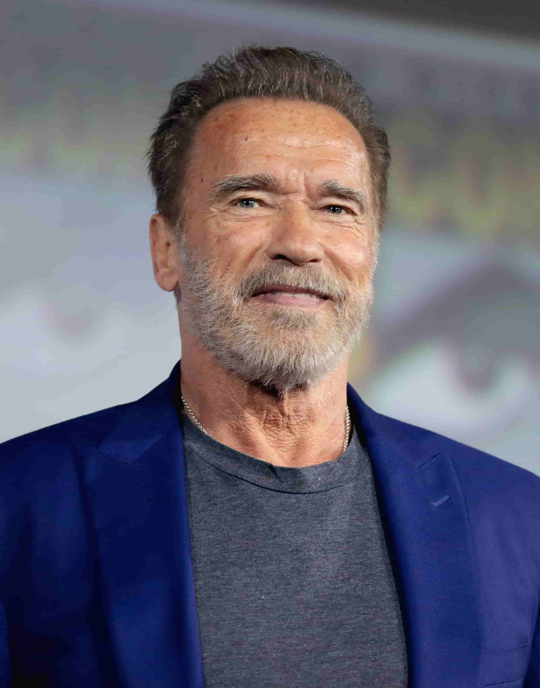
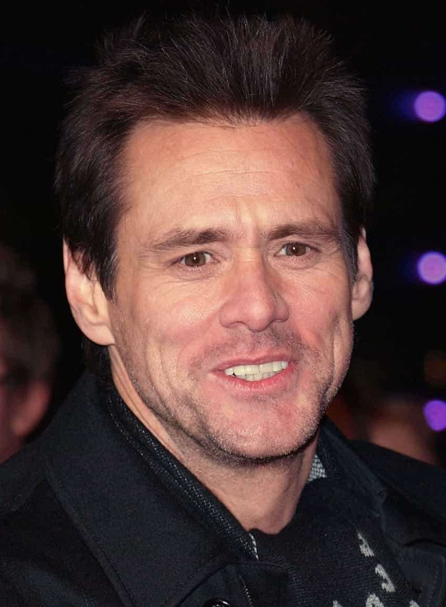
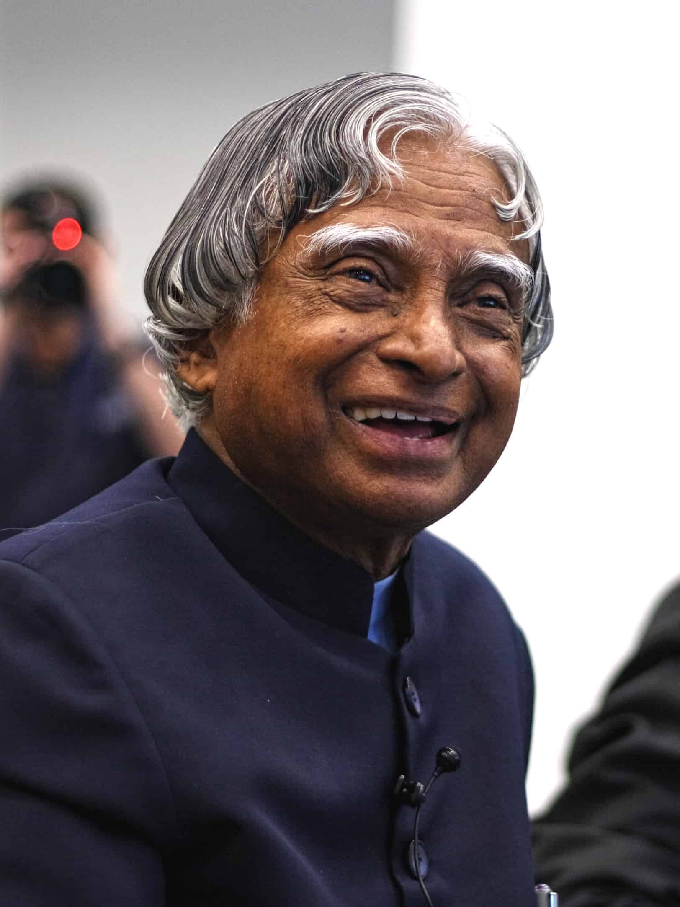
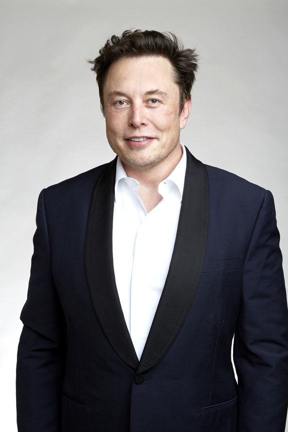
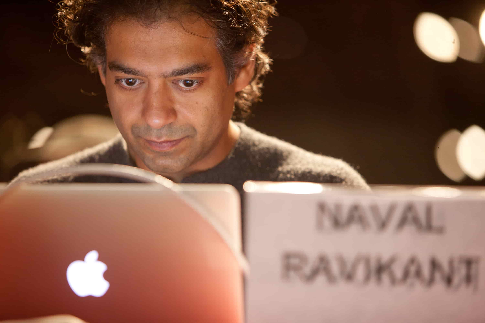
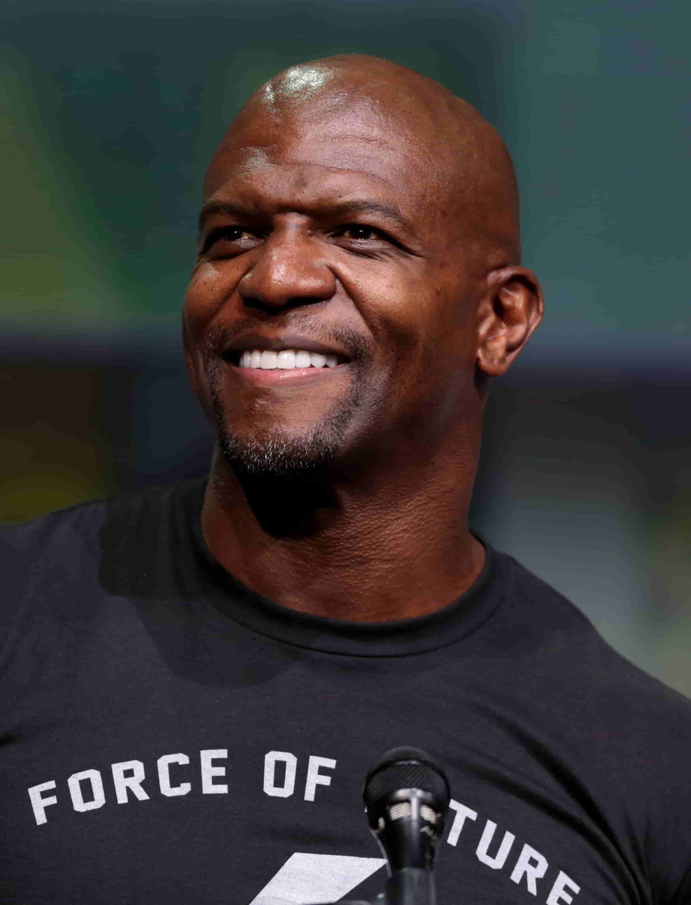

AS you grow up, you will set up some goals and you start to dream about that. In order to strengthen your skills, knowledge, courage, you will follow the person who is most inspiring for your life. Whenever you see these people and you listen to their words, I will get a strong feeling that I can do anything in my life. This is a selection of inspirational people, people who have made a lasting contribution towards creating a better world. These people had inspired me by their various achievements, but also by their attitude and values.
- Arnold Schwarzenegger 
- Arnold Schwarzenegger, arguably the best bodybuilder of all time. He’s a powerful source of motivation, and has had a positive effect on my life. In particular he inspired me to get into bodybuilding in the first place just like Reg Park, a great bodybuilder inspired him in his early life. Arnie’s a classic example of how dreams truly can come true. Everything he has, has come from building himself a great body: the movie roles, money, american citizenship, confidence, governor of California. It all started with focusing simply on building his body. There’s a lot of knowledge stored within Schwarzenegger. He taught me to dream big, be unique, work hard to achieve that dream and never ever quit whatever happens!
- Bill Gates
- I think it’s been said that if Bill Gates were to drop a $50 note on the floor, by the time he picked it up he would have made more than the note’s worth. Anyway, Gates needs no Introduction. We all know he’s a billionaire, founder of Microsoft, and someone to seriously pay attention to if you want to be successful in business. He along with Steve Jobs is responsible for my passion towards Tech Entrepreneurship. He taught me value of patience, the habit of self-improvement, reading and gave me an overall feel of entrepreneurial life that I wished to explore. He is also a reminder of how to be, when you are successful and it's important to give back to the society that paved your way. He is an example of how a true leader should be just like Jobs was.
- Steve Jobs
- Steve Jobs was a wise and successful billionaire. Jobs always pushed the boundaries of what was possible at Apple computers, and never stopped until his vision was a reality. The world of technology most certainly wouldn’t be the same as it is today if Jobs never came a long and founded Apple. He made me realise the importance of good UI, brand value, marketing, qualtiy in general and how it can make or break your company. He was always a good critic and wanted to give his best to his users. He also held an equal amount of motivation for me to follow my own dreams.
LOVE WHAT YOU DO!, PERSEVERANCE IS WHAT SEPERATES SUCCESSFUL FROM NON-SUCCESSFUL ENTREPRENEURS - Jim Carrey 
- I’ve admired Jim Carrey and his work for a long time now, especially whens he adds comedic value to films that are fairly inspirational and meaningful. I’m talking about, of course, ‘Yes Man!’ and ‘Bruce Almighty’. You can’t not love those two inspirational films. His life resembled some aspects of my life, which drew me close to his value beliefs. Even though he and I had a different yet same tough childhood both his and my family always supported in our endeavours, and look where it lead him. It gives me a sense of motivation that I too can achieve great things in life with the right kind of motivation from my family and friends. He taught me to never fear the unseen as it deprives you of your glory. Take the risk as life is an adventure, Happiness lies in the smaller things.
- A.P.J Abdul Kalam 
- My Favorite President Late Dr. APJ Abdul Kalam. Firstly, I believe that a president has to be a great leader. This implies that he/she should have an ideal character. It is of utmost significance that a leader is reliable to lead others. A leader ought to be trusted and be acknowledged to live their life with sincerity. For me, the one that I am deeply influenced by is Dr. APJ Abdul Kalam. He was a great soul and i would like to tell you more about him. He is universally known as the ‘ Missile Man of India ‘ for his effort in the expansion of ballistic missile and launch vehicle machinery. He played a crucial role in India’s Pokhran-II nuclear analysis in 1998. Though as a child he had a dream of becoming a fighter pilot, he missed his chance very narrowly. But it didn’t break him down . His contributions are immense. He was responsible for the development of India’s first satellite launch vehicle, the SLV- 3, development and operation of strategic missiles and building indigenous capability in critical technologies. He was appointed as the chairman of Technology Information, Forecasting and Assessment council (TIFAC). He guided a number of Technology projects and missions to take India into the 21st century. Mr. Kalam has inspired us all in many different ways and we love them so much that it cannot be articulated in mere expressions, even to the extent that he is the reason I dreamt of becoming a space scientist in the first place. “Hard work is the key to success” is his Mantra that I follow. He has shown how a great leader should be!
- J.K. Rowling
- J.K Rowling is an English author, best known for creating the Harry Potter franchise. Rowling started from the bottom, and is a pure example of rags to riches. Her story is not just inspiring but is full of practical lessons as well. Born and brought up in the UK, Joanne Rowling, better known as J.K. Rowling, faced her own share of problems right from her childhood to well into her adult years too. Following this, she went on to entertain the world with her set of magical stories. When she believed to have hit a dead-end with no stable life even after 7 years of graduation, Rowling contemplated committing suicide too. Going through failed marriage, raising her child, mother's death were all painpoints of Rowling's life yet she still managed to do what she loves even in tough times, ie. storytelling capturing children and teens as well as adults alike. I still remember reading her books in high school like it was yesterday. Other than that, her life is a true example of determination and perseverance as she never quit even when most publishers rejected her first Harry Potter book. J.K. Rowling happens to be, perhaps, the only billionaire to have lost their ‘billionaire’ tag due to immense donations and charitable activities. This goes on to prove that Rowling is a gem of a lady and deserves every bit of success that she earned, especially after what she went through. A challenging life coupled with the desire to leave her mark on the world, Rowling’s intentions were always crystal clear. Although she had nobody to fall back upon, she managed to take a stance and fought her way out. The loss of her mother in the middle of her writing did indeed affect her story-telling to some extent, but also left her an opportunity to portray her emotions through Harry’s in the wake of it. Although it may seem untrue, J.K. Rowling has single-handedly managed to shape the minds of an entire generation with her magical story, and will continue to be remembered as the creator of Harry Potter.
- Elon Musk 
- Elon Musk was born in Pretoria, South Africa on the 28th June, 1971. His mother was a model from Canada, and his father an engineer from South Africa. Musk has two younger siblings, Kimbal and Tosca. At just 10 years old, Elon found his passion with computers. He taught himself computer programming at 12 years old; and created a video game called Blastar, which he sold to a magazine called PC and Office Technology, for approximately $500. Elon Musk has been in the news recently involving the Tesla Model 3 unveiling, in which a ridiculous number of pre-sales were made, resulting in billions in revenue within a very short span of time. For those still unsure of who Elon is; he was the co-founder of PayPal, and is now the co-founder of Tesla, and CEO of SpaceX, as well as chairman of SolarCity. After the sale of PayPal, Musk put all his capital from the sale into the other 3 ventures mentioned above. All of it. Elon Musk is a man who takes risks. Even after a huge payout from PayPal, he invested virtually all of that money into the likes of SpaceX and Tesla to make his vision a reality. 3 Success Lessons from Elon Musk:
- "Don’t Be Afraid to Put Yourself in Uncomfortable Situations"
- Elon has previously explained that after the sale of PayPal; he invested almost all of the money he received into other companies. He took an incredible risk, and could have easily lost all the money he worked so hard to attain in the first place. However, Musk had a vision, and that’s why he wasn’t afraid to take the risk. We all know how well it’s paid off for him, considering that 15 years later he’s worth more than 100 times the amount he received from PayPal.
- "Focus On Building Amazing Products"
- PayPal, Tesla, SpaceX, Solar City; they all have the main focus of being the best solution out there to each individual market they target. Hence, they’ve become so successful because said focus has controlled just how good the end product is. The reality is that if your end product isn’t good enough, nothing else you do will help you achieve the same level of success.
- "Follow the End Vision"
- Musk is changing the world; with space and automobile technology, revolutionising the world as we know it. He wants to, and is making a difference. This is his vision, his aim, and he directed all of his energy towards it once he had the money to do so. You should always follow your vision, and no one else’s.
- Naval Ravikant 
- Everybody often refer to him as Yoda. Naval Ravikant has long been one of my favorite thinkers, and has helped to shape the way that I percieve my surroundings on a daily basis. I’m constantly recommending Naval content to help enlighten my friends and family, so I figured why not just create a master list and share it with everyone. Naval Ravikant is an Indian American entrepreneur and investor. Naval is the co-founder, chairman and former CEO of AngelList. He has invested in over 100 companies including Uber, FourSquare, Twitter, SnapLogic, Yammer, and Clearview AI. Ravikant is also a Fellow of the Edmund Hillary Fellowship. He was listed as 4th on CoinDesk's "Most Influential in Blockchain" 2017 list. Why i love his thoughts and philosophy, is that he shares all his knowledgehe gained throughhis life experiences And due to the fact that he united the whole of Entrepreneur Community as a whole under one roof througha platform we all know and love as "AngelList". "Experience is the ultimate Guru."
- Terry Crews 
- Terry Alan Crews is an American artist, actor, and former America football player. Crews has also hosted the games shows who wants to be ‘Who Wants To Be a Millionaire’. He has also starred in films including ‘Friday After Next’ (2002), ‘White Chicks’ (2004) and ‘Idiocracy’ (2006). Crews started his career a football player in the NFL and decided to pursue his acting career after that. As of 2020, Terry Crews’ net worth is estimated to be roughly $20 million. He has earned his high net worth through his acting career and as voice acting in animated films. His father was an alcoholic yet he survived through all the hardships and chose to be a better person rather than succumbing to his hardships which I really admire, also he had also influenced my fitness lifestyle. 3 Success Lessons from Terry Crews to learn:
- "Don’t let your past define you"
- Try to embrace your past. We’ve got to define our circumstances for ourselves. Our sense of ourselves is all we have in this world. Don’t let the past define you for who you are.
- "It’s okay to start over"
- Whether it’s moving city, a break-up, or starting your own business, once you realize that change is not easy, you can start to reinvent yourself. The goals that we want to achieve will require you to become something more to make it happened.
- "Get out of your comfort zone"
- If you never take risks you will never be able to achieve the goals that you are working toward to. By going outside your comfort zone you can achieve much more. By hanging out with new people, creating new experiences and challenge yourself to constantly be learning. Don’t fear change.
“Strength does not come from winning. Your struggles develop your strengths. When you go through hardships and decide not to surrender, that is strength.”
“What is the point of being on this Earth if you are going to be like everyone else?” – Arnold Schwarzenegger
““To win big, you sometimes have to take big risks.”
“Your most unhappy customers are your greatest source of learning.” – Bill Gates
“Innovation distinguishes between a leader and a follower.” – Steve Jobs
“If you don’t love something, you’re not going to go the extra mile, work the extra weekend, challenge the status quo as much.” – Steve Jobs
“I really believe in the philosophy that you create your own universe. I’m just trying to create a good one for myself.”
“How will you serve the world? What do they need that your talent can provide? That’s all you have to figure out.” – Jim Carrey
“If a country is to be corruption free and become a nation of beautiful minds, I strongly feel there are three key societal members who can make a difference. They are the father, the mother and the teacher.”
“We will be remembered only if we give to our younger generation a prosperous and safe India, resulting out of economic prosperity coupled with civilizational heritage.” - A. P. J. Abdul Kalam
“It is our choices that show what we truly are, far more than our abilities.”
“You sort of start thinking anything’s possible if you’ve got enough nerve.” – J.K. Rowling
“When something is important enough, you do it even if the odds are not in your favor.”
“I think it’s very important to have a feedback loop, where you’re constantly thinking about what you’ve done and how you could be doing it better. I think that’s the single best piece of advice: constantly think about how you could be doing things better and questioning yourself.” – Elon Musk
“A fit body, a calm mind, a house full of love. These things cannot be bought — they must be earned.”
“Earn with your mind, not your time.”
“You’re never going to get rich renting out your time.”
“I decided everything was going to be a learning experience, and I was going to make good use of every single moment of every single day.”
“I told everyone I would never be an actor. People used to tell me, ‘Hey, you got a good look. You should try.’ And I was like, ‘Nah. That’s not me.’ And then, the moment I tried it, I found I loved it more than anything in the world, and that taught me a lesson. That is, just go for it.” – Terry Crews
“The right quote can inspire people to change their ways." - Zig Ziglar
Characteristics of Inspirational people will always continue to Influences us. As I continue my life's journey more people may have a positive effect on me, though its not possible to list all of them here. Some other fellow humans like Tim Ferris Dale